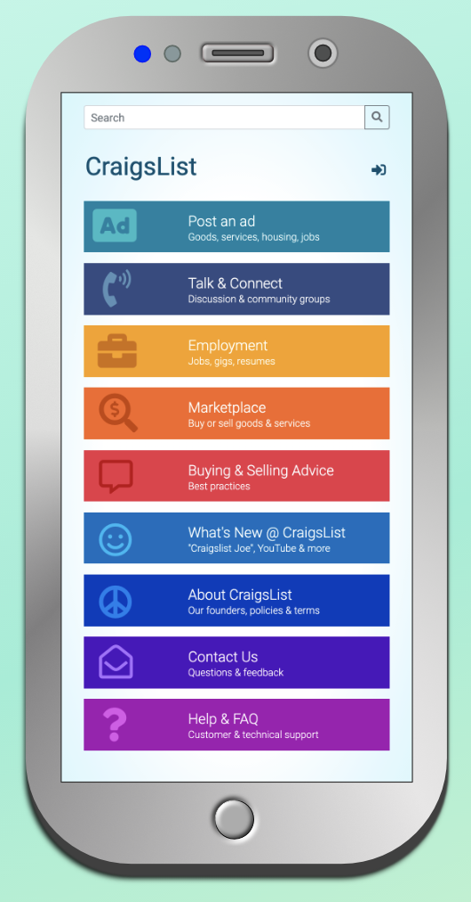
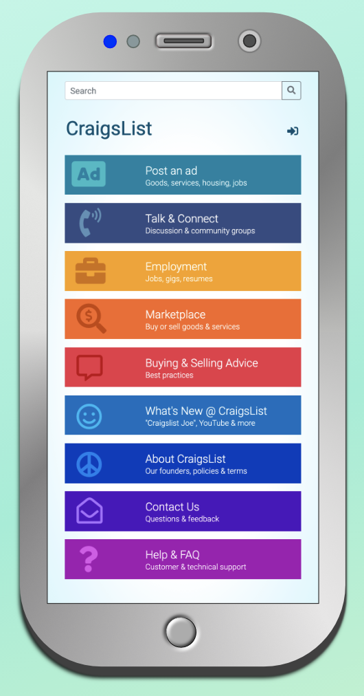
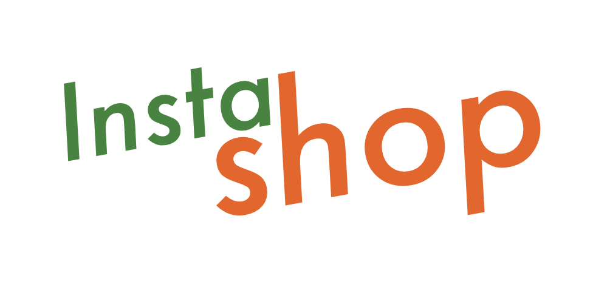
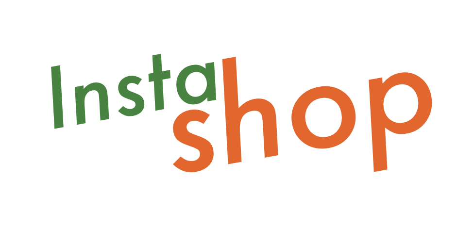

Hello, I'm Cheryl
Aspiring web developer with a knack for graphic design
Hello, I'm Cheryl
Aspiring web developer with a knack for graphic design
I believe that web development is a vehicle for successful communication.
It lets us advertise, share, discuss or debate everything from tangible products to ideas and opinions through our mobile devices, desktops, or smart TVs.
I enjoy planning the best way to utilize web page structure to communicate a message to users.

Color, typography, and content enhance the structure of a web page.
It grabs the attention of the user through visually appealing, eye-catching design.
I approach graphic design as a method to enhance communication with attractive visuals that I create via Affinity Designer.
These are three of my recent web development projects. I produced the logos, color schemes, layout, and code of each project.
Please take a moment for a close-up look at all three. Click on the thumbnail or the hyperlink for each project provided in the descriptions below.
This is my redesign of the Craigslist landing page (craigslist.org) using HTML and CSS.
Craigslist is a simple webpage of hyperlinks categorized per the different sections of the site (housing, jobs, services, etc).
I streamlined the major categories and added color to improve UI.
I applied a rainbow-like color scheme with white lettering to enhance legibility and visual interest.
Craigslist redesign on GitHub 

This is my most comprehensive project to date. It utilizes all of my coding skills, which currently include HTML, CSS, and JavaScript.
The game requires the user to find eight sets of matching cards within a time limit.
I relied heavily on JavaScript for this project. Notably, I used it to allow only two tiles to open per turn, and to control how a user wins or loses the game.
Cheryl's Matching Game on GitHub
This is my redesign for mobile of the Berkshire Hathaway landing page (berkshirehathaway.com). (My redesign for desktop includes a photo of Warren Buffett.) It includes HTML and CSS.
Since the company and its founder are American business icons, I chose a conservative gray, blue, and white color scheme.
The hierarchy of my responsive design spotlights stock performance, headlines, and shareholder info.
Berkshire Hathaway redesign on GitHub
This is a collection of visuals that I have created for freelance work and class projects. I typically draw my ideas via pencil sketch then compose on Affinity Designer.
My freelance work includes the two business cards for Mr. Jackson and the two logos for his company, Ideal Emissions. All other visuals were part of class projects for learning purposes.
 
